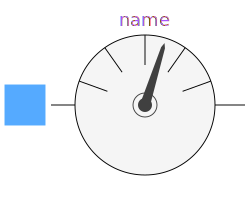
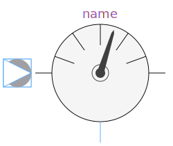

This package contains connector specifications and partial models for more complex components.
| Name | Description |
|---|---|
|
|
Basic connector |
| PositivePin | Positive connector |
| NegativePin | Negative Connector |
|
|
Two pins |
|
|
Two pins, current through |
|  AbsoluteSensor | Partial potential sensor |
|  RelativeSensor | Partial voltage / current sensor |
|
|
Partial voltage / current source |